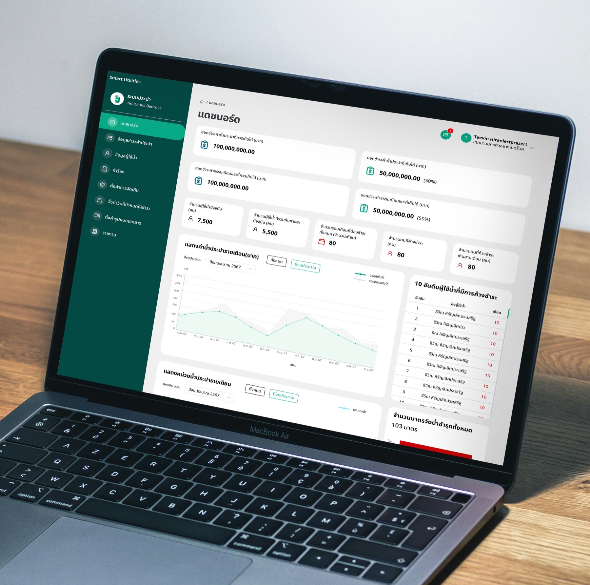
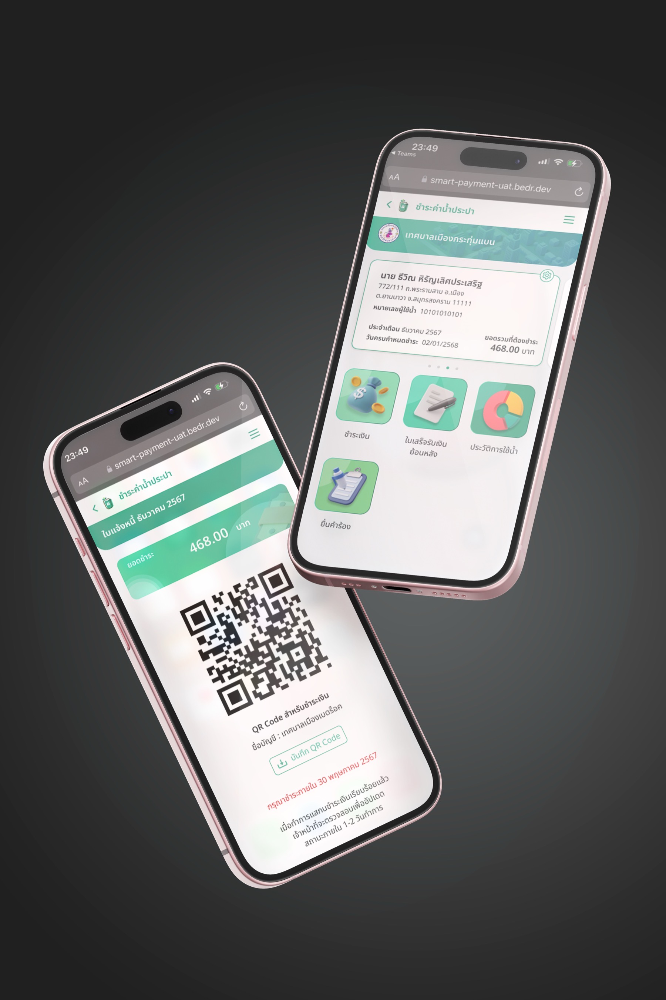
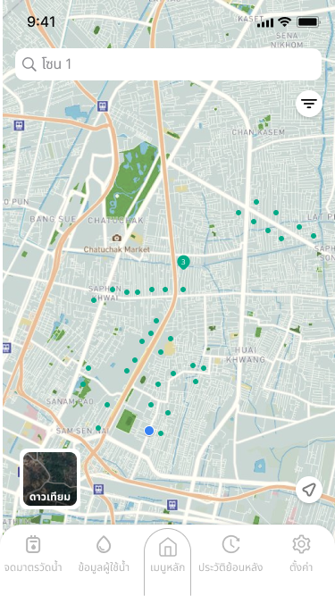
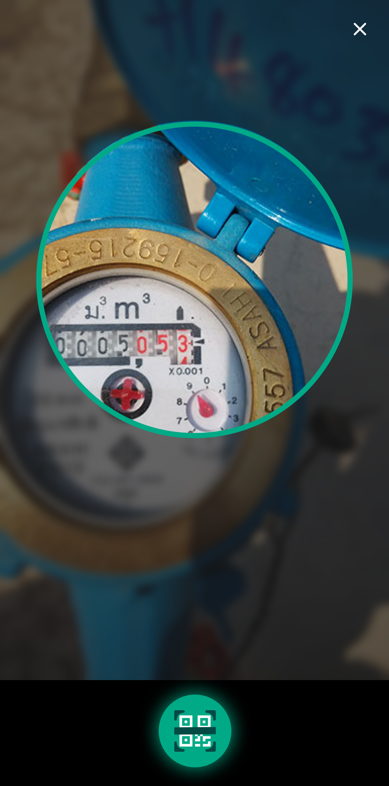
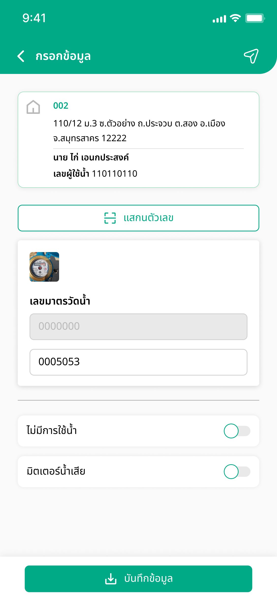
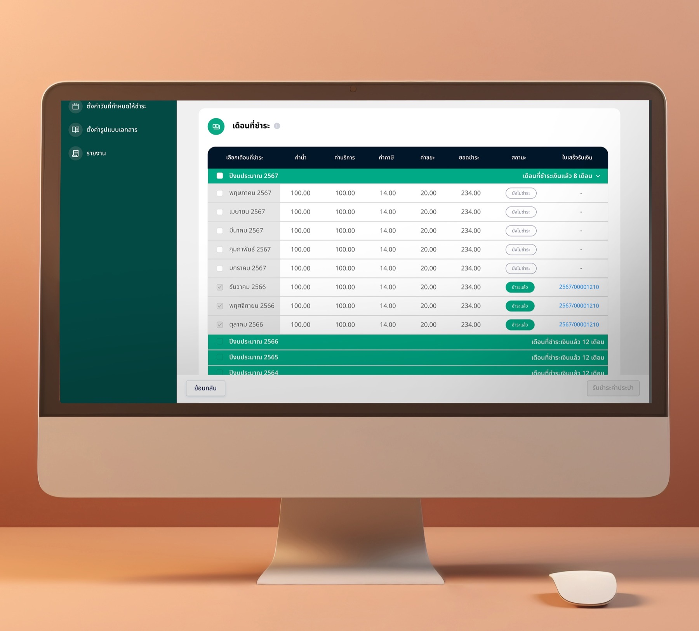

Thailand's municipalities collect utility fees for water and waste — most of it still tracked on paper, collected in cash, and filed by hand. For the citizens paying those bills, the experience was just as broken. This platform changes both sides at once: a unified system for water and garbage fees that gives operations full accountability and citizens the convenience they've never had.

Municipal staff were accustomed to the old way of working — collecting meter readings on paper, gathering payments in cash through field teams, and filing reports manually at the end of each day. It was a system built on habit, not accountability.
The result: no audit trail, no transparency, and a growing gap between what was collected in the field and what was reported at the office. Resources were wasted, errors were invisible, and both staff and citizens had no reliable way to verify anything.
We built a platform that replaces paper with digital reports, enables automated email delivery of statements, and gives every level of the organisation — from field inspectors to municipal directors — a complete, auditable record of every transaction, reading, and request. Any time. Any device.
Given the scale of the project — three distinct user groups, two services, multiple municipalities — design decisions had real operational consequences. I ran usability sessions with operations staff to map exactly what they needed visible in the dashboard day-to-day, rather than assuming. For the handheld app, research revealed that inspectors' biggest pain wasn't the scan itself — it was knowledge transfer. Senior staff carried years of property knowledge in their heads, and when they left, that knowledge left with them. Adding property history and map pinning to the handheld wasn't a feature request; it was a direct response to that finding. New inspectors could now pick up a route cold and work at full speed from day one.
Staff can generate reports and export them via email at any time — no more end-of-month paper stacks. User accounts can be transferred between addresses with a few taps, and a real-time dashboard gives municipal directors a live overview of both water and waste services across the entire district.
Citizens pay water and garbage fees online from their phone — no travel, no queues, no office hours. They can review usage history month by month, track payment records, and submit service requests directly. What once required a trip to the municipality now takes two taps.
Designed for the field — not just for scanning. Each property comes with its full service history, map pin, and account notes, so a new inspector can walk any route on day one without relying on a senior colleague to show them around. Knowledge that used to live in people's heads now lives in the app.

Citizens can now check their water usage history, view itemised bills, and pay online — all without setting foot in a municipal office. Usage anomalies surface automatically, so residents know about a leak before it turns into a surprise bill. Transparency that builds trust. Convenience that changes daily life.



The inspector opens their route for the day, selects the address, and sees the full account history before arriving — no paper routes, no lost records.
Point the camera at the meter dial. OCR captures the digits automatically — no manual transcription, no misread numbers, no illegible handwriting.
If a reading looks unclear, the inspector can override it manually. Every correction is timestamped, tagged with a user ID, and stored permanently in the audit log.
The old paper system had no accountability. Readings could be altered, skipped, or simply lost — and there was no way for operations or citizens to know. That opacity eroded public trust and created conditions for billing fraud. The audit trail changes that: every reading, every correction, every inspector is on record. Permanently.


Monthly revenue grew from ฿900,000 to ฿8 million
in a single district — without adding a single staff member.
Before the platform, citizens avoided paying bills because the process was slow, opaque, and required a trip to the municipal office. Once they could view their usage history, receive digital receipts, and pay from their phones, trust replaced friction — and payment rates followed.